Actual game captures. Equal-size iron controls, original pixel icons, fixed brass rims and moving faces. No supply is spent until delivery confirmation; Monitor pressure becomes public only on arrival.
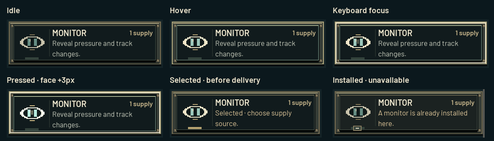
Automated real-engine input: hover → focus → press → source selection → route preview → confirmation → arrival. The physical press is held briefly to make its travel visible. No audio.
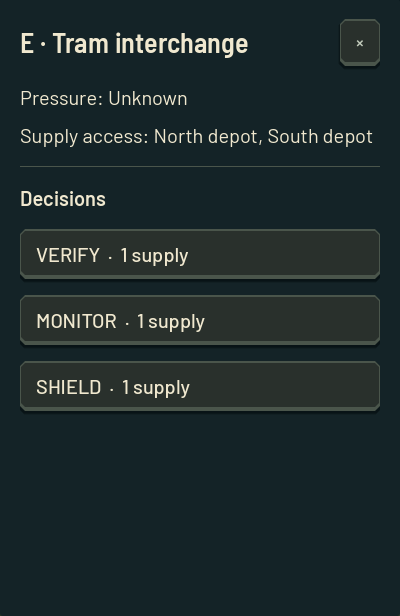
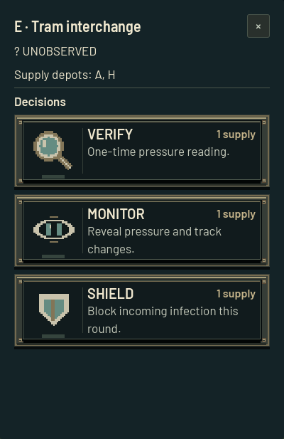
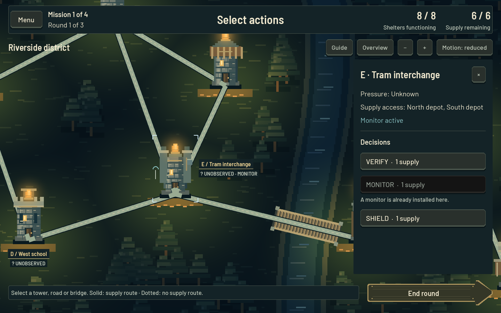
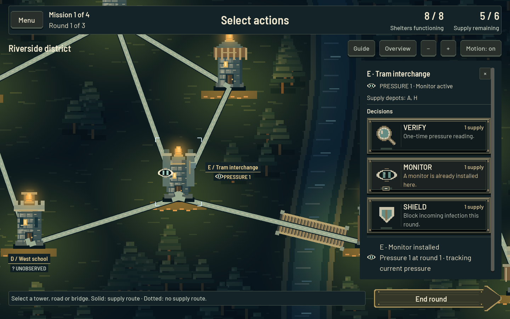
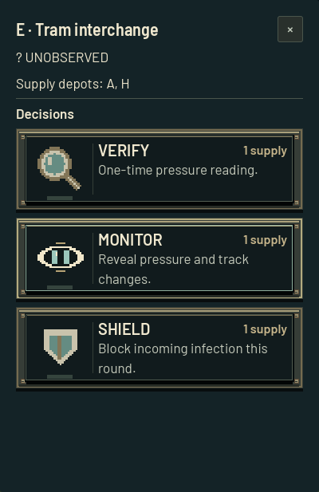
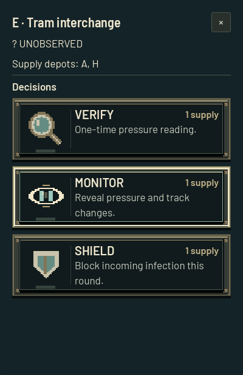
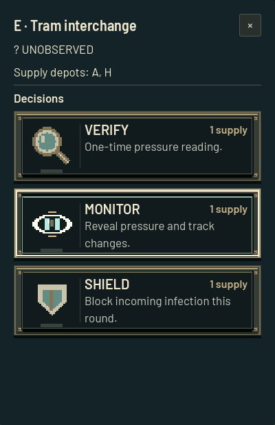
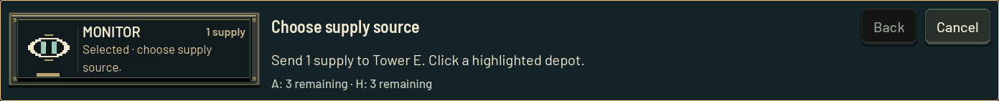
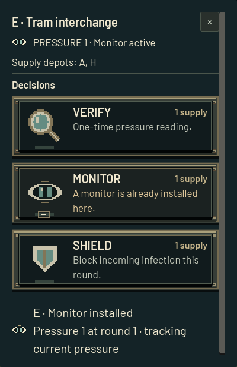
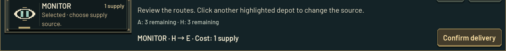
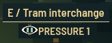
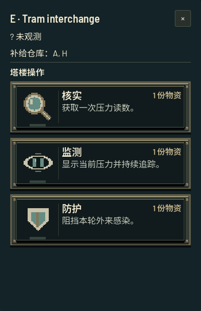
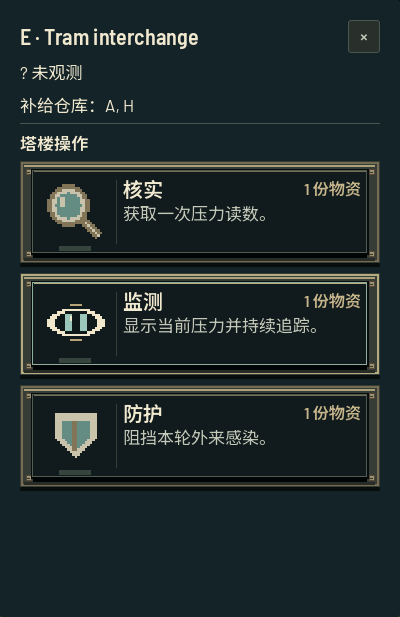
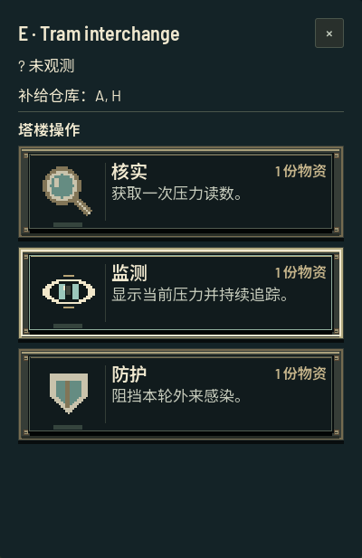
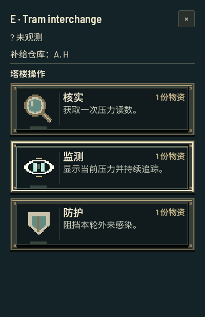
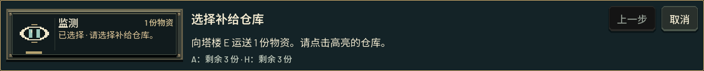
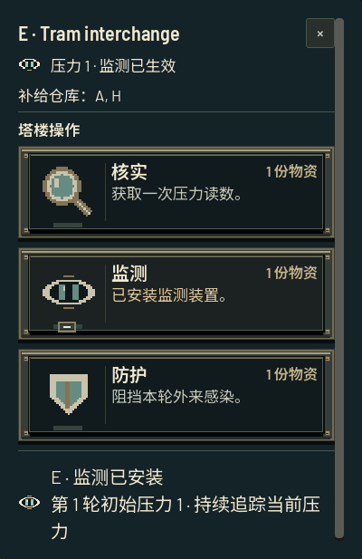
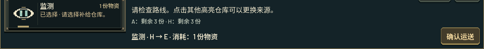
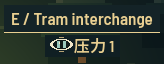
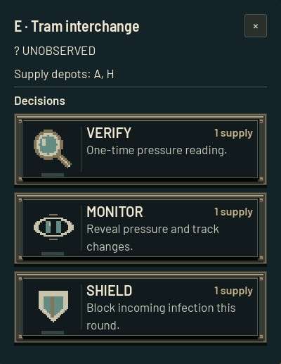
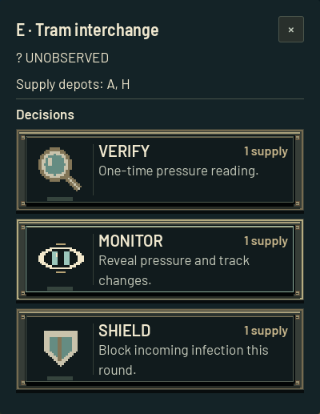
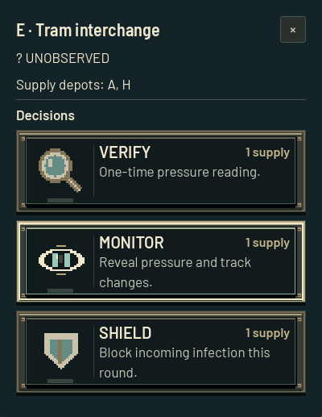
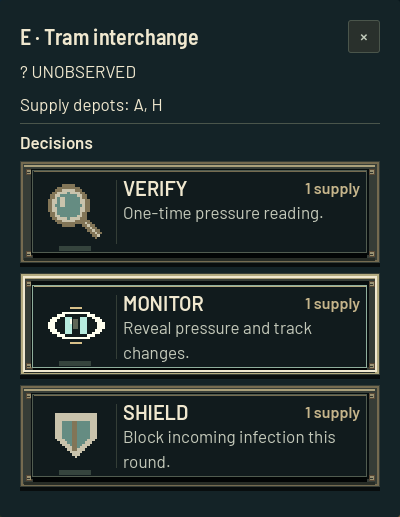
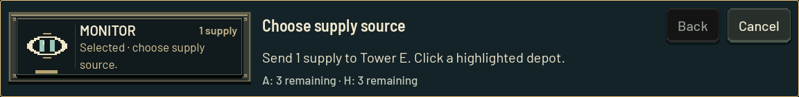
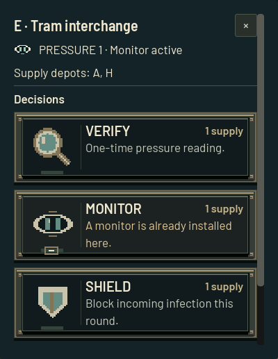
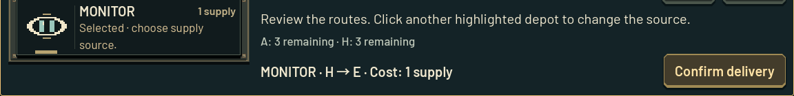
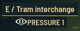
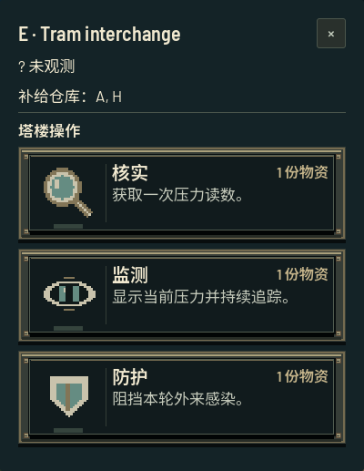
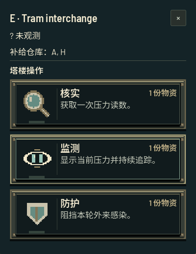
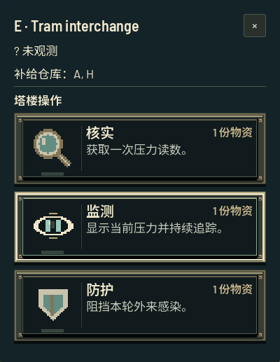
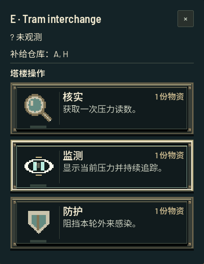
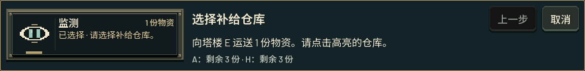
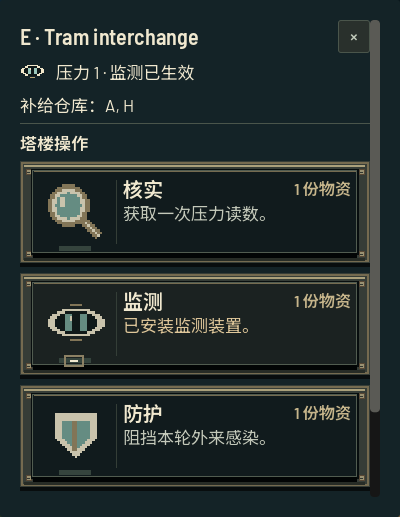
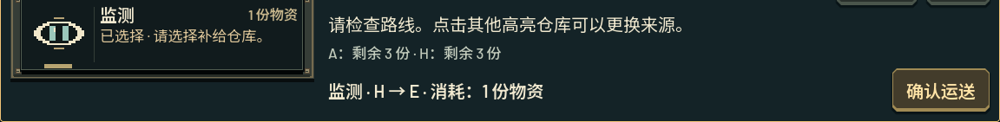
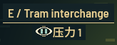
Balance caveat: Monitor still costs 1 supply and now provides Verify’s information plus persistent updates. Verify is retained; this dominance remains unresolved.